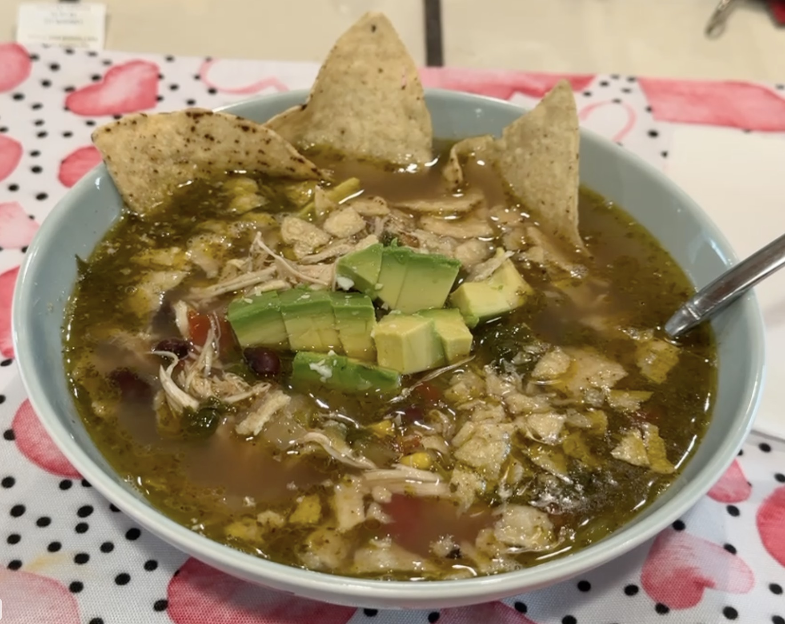

Home
Chicken Tortilla Soup

Description
Simple and quick but delicious and comforting soup that can be made with easy to find ingredients
and esily customizable to your liking. A few minutes of prep time and let the instant pot do the work.
Ingredients
- 2 chicken breasts
- 1 carton chicken broth (32oz)
- 1 can of black beans (15oz)
- 1/2 yellow onion (diced)
- 1 can of fire-rosted tomatoes (15oz)
- 1 small can of mild green chili peppers
- 1 cupp frozen corn
- 2-3 tablespoons olive oil (enough to coat the bottom of the pot)
- 1 tablespoon oregano (Mexican preferred)
- 1 tablespoon of cumin
- ¼ bunch of cilantro, no stems
- Salt and pepper to taste
- Cheese
- Avocado
- Tortilla chips
Steps
-
Dice onion
-
Turn on the instant pot and set it to saute, once the pot is hot, pour oil in the pot and give
it a few seconds to get hot.
-
Place the diced onion in the pot and stir. Allow the onions to cook until translucent, NOT brown.
-
Once the onion becomes translucent, add about a cup of the chicken broth in the pot to lower
the temperature
-
After about a minute, add the chicken breasts (uncooked), and stir.
-
After the chicken has been in the pot for about a minute or two, add the black beans,
fire-roasted tomatoe, and green chili pepers. Then add the rest of the chicken broth
and add water if you like the soup with more liquid. Stir.
-
After stiring and allowing the contents to come to back to temperature (about a minute or two),
add the corn, the oregano and cumin, and the cilantro.
-
Swish around to mix all the contents before putting the lid on.
-
Place the lid of the instant pot and set it to "Seal". Cancel the saute mode and select "soup or broth",
or "presure", for 13 minutes.
-
After the 13 minute time, turn off the instant pot and leave it alone for about 5 minutes. Then do a manual
release.
-
When all the presure is relased, open the lid and remove the chicken breasts, placing them on a large plate.
-
Shred the chicken breats on the plate using two forks. Add Salt and pepper to the chicken before placing
it back in the soup. Mix the shredded chicken into the soup and taste for seasoning.
Plating
Add cubed cheese to the bottom of a bowl and laddle in soup. Top it with cubed avocado and crushed tortilla
chips or tortilla strips, and garnish with a few sprigs of cilantro if desired.